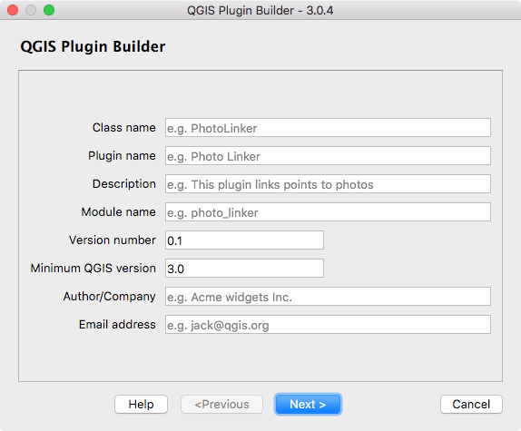
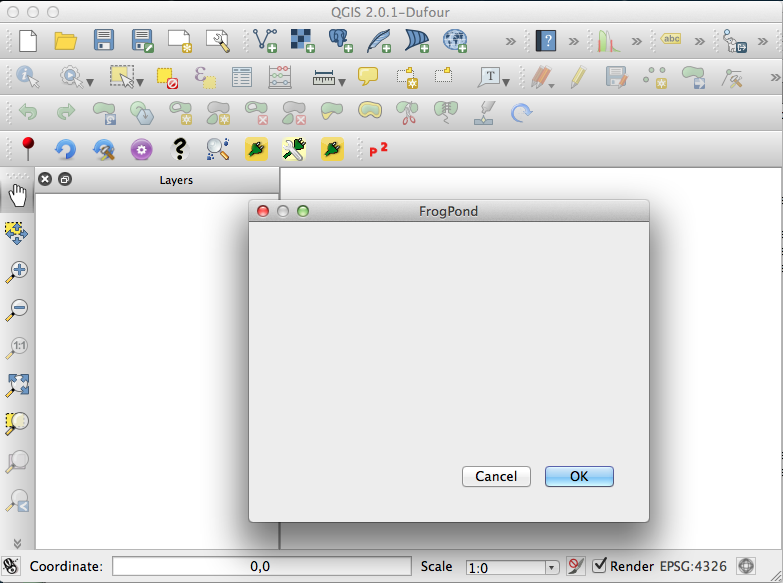

QGIS Plugin Builder¶
Concepts¶
Plugin Builder provides you a working template from which you can create your own plugin.
The steps to using Plugin Builder are fairly simple:
- Open the Plugin Builder from within QGIS
- Fill out the required information
- Click OK
- Designate where to store your new plugin
- Compile your resource file
- Install the plugin
- Test it
Running Plugin Builder¶
When you run Plugin Builder you will see a dialog with text fields. Each text field contains a hint inside it in greyed out text that will disappear when you start typing text into it. There is also a tooltip containing help information that will appear when you hover over each text field:
{kind=link}
The descriptions give you a hint about what is required for each field. The following sections describe the required and optional parameters in greater detail.
Required Parameters¶
- Class name
This is the name that will be used to create the Python class for your plugin. The name should be in CamelCase with no spaces. Plugin Builder will accept an all lower case class name but this should be avoided since it isn’t in line with Python coding style. Examples of valid class names are:
- MyPlugin
- PluginBuilder
- ScriptRunner
- Module name
This is the name that will be used to create the Python module ( file) for your plugin. The name should be in lowercase with words separated using underscores. Plugin Builder will accept any case module name but this should be avoided since it isn’t in line with Python coding style. Examples of valid module names are:
- detect_features
- detector
- Plugin name
This is a title for your plugin and will be displayed in the QGIS plugin manager and the plugin installer. It will also be used as the menu name that appears in the QGIS Plugin menu. You can use the Class name, or make it more readable. Some examples:
- My Plugin
- Plugin Builder
- ScriptRunner
- Description
- This is a one line description of the plugin’s function and is displayed in both the Plugin Manager and Plugin Installer. Keep it short yet descriptive so the purpose of the plugin can be easily determined.
- Version number
- This is the version number of your plugin. Plugin Builder suggests 0.1, but you can start with any number. The Plugin Installer uses the version number to identify which plugins you have installed are upgradeable so it is important to increment it as you release new versions.
- Minimum QGIS version
- This is the minimum version of QGIS required for your plugin to work. If your plugin uses features only present in a newer version, be sure to set this field accordingly to prevent problems for those running older versions. Version 2.0 of Plugin Builder defaults this field to 2.0.
- Text for the menu item
This is the text that will appear in the menu. In the example below, the plugin name is Frog Pond and the text for the menu item is displayed to the right of it:

In general you shouldn’t use the same text for the plugin name and the menu item; if you do your menu will look like this:

- Author/Company
- Put your name or company name here—this information is used in writing the copyright statement in the source files of your plugin, as well as being displayed in the Plugin Installer and on the QGIS plugin repository.
- Email address
- Put an address where users of your plugin can contact you. This information is written to the copyright header of your source files and also displayed on the QGIS plugin repository listing for your plugin.
- Menu
Choose an appropriate location for your plugin’s menu based on its main functionality. This will place your menu under one of the following main menus:
- Plugins
- Database
- Raster
- Vector
- Web
If none of the specific categories apply (Database, Raster, Vector, Web), choose Plugins. Your choice is also written to the category field in metadata.txt.
Recommended Parameters¶
There are several fields that you should seriously consider completing when generating a new plugin. This will help ensure your plugin is accepted and users can be successful using it.
- Bug tracker
- A URL pointing to the bug/issue tracker for your plugin. You can create a project with tracking for your plugin(s) at http://github.com or you can use http://hub.qgis.org/projects/new.
- Home page
- The URL of the home page for your plugin. This can be the same as the project page you create on github.com, hub.qgis.org, or a site of your own.
- Repository
- The URL of the source code repository for your plugin. This allows others submit patches and improvements for your approval, as well as providing you with the benefit of source code control. Consider using http://github.com to store your code.
- Tags
Tags are a comma separated list of keywords describing the function(s) of your plugin. You can enter your own or select from a list of tags by clicking the button to the right of the “Tags” field.
You can create a customized list of tags to use instead of the standard set by creating a plain text file named .plugin_tags.txt in your home directory. The file should contain a single tag per line. For example:
composer csv database
- Experimental
- Check this box if your plugin is considered experimental, meaning it is either incomplete or may cause unintended consequences. This allows users to filter out experimental plugins in the Plugin Installer if they choose not to live on the bleeding edge.
Results¶
When you click OK, Plugin Builder creates your new plugin for you and displays the results:

The results dialog tells you where your plugin was saved, the location of your QGIS plugin directory, and what to do next. This same information is contained in the README.html and README.txt files in your generated plugin directory.
Compiling the resource file¶
After you generate your plugin the resource file needs to be compiled before it is functional in QGIS.
The resource file contains definitions of media used in your plugin. Upon generation, this contains one entry for icon.png, the icon file for the plugin.
To compile the resource file into Python code, use the pyrcc4 utility that comes as part of your PyQt installation:
pyrcc4 -o resources.py resources.qrc
Once the resource file is compiled, the generated plugin can be loaded in QGIS.
Deploying¶
To deploy your new plugin during development, you have two choices:
- Copy the entire plugin directory to your QGIS plugins directory
- Use the QGIS_PLUGINPATH environment variable to point to the directory where your development plugin(s) are located
The Copy Method¶
To deploy in this fashion, simply copy your plugin directory to the location of your QGIS plugins. By platform, this location is:
- Linux: .qgis2/python/plugins in your home directory, typically found at
/home/gsherman/.qgis2/python/plugins
- Mac OS X: .qgis2/python/plugins in your home directory, typically
/Users/gsherman/.qgis2/python/plugins
- Windows: %HOMEPATH%\.qgis2\python\plugins, by default,
- C:\Users\gsherman\.qgis2\python\plugins on versions later than XP,
- C:\Documents and Settings\gsherman\.qgis2\python\plugins on XP
Since each plugin must be contained in its own subdirectory in .qgis2/python/plugins, make sure you copy the directory, not the files in the directory.
If your operating system supports gmake (GNU make), you can use the deploy target of the Makefile in your plugin directory to deploy directly to .qgis2/python/plugins:
make deploy
The Environment Variable Method¶
Using the QGIS_PLUGINPATH environment variable you can tell QGIS to look in an additional location for plugins. This can be handy for development, allowing you to test your plugin without copying it to .qgis2/python/plugins.
To use this method, set the QGIS_PLUGINPATH environment variable to point to your development directory before starting QGIS. When QGIS starts up, all the directories in QGIS_PLUGINPATH will be searched and those containing valid plugins will be added to the Plugin Manager.
Testing¶
With your new plugin deployed, start up QGIS, open the Plugin Manager, and enable it. Then click on the tool or the menu item for the plugin to run it. If all is well, you should see something similar to this:
If the plugin throws an error make sure you have compiled the resource file before deploying and testing.
Once the generated plugin is working it’s your turn to customize the user interface and add the needed code to make it do something useful.
Using the Makefile¶
The make file can be used to compile and deploy your plugin, assuming you are using an operating environment that supports GNU make. It also provides a number of other actions to aid in plugin development.
The following targets are supported
| clean: | Delete the compiled UI and resource files |
|---|---|
| compile: | Compile the resource and UI files. This is the default target. |
| dclean: | Same as derase but also removes any .svn entries |
| deploy: | Deploy the plugin |
| derase: | Remove the deployed plugin |
| doc: | Build the documentation using Sphinx |
| package: | Package the plugin using git archive |
| transclean: | Delete all .qm (translation) files |
| transcompile: | Compile translation files into .qm format |
| transup: | Update the .ts (translation) files |
| upload: | Upload the plugin to the QGIS repository |
| zip: | Deploy the plugin and create a zip file suitable for uploading to the QGIS repository |
| test: | Run unit tests and produce a coverage report. |
| pep8: | Run python PEP8 check and produce a report. |
| pylint: | Run python pylint check and produce a report listing any violations. |
Using pb_tool¶
pb_tool is a Python command line tool for compiling and deploying QGIS plugins on Linux, Mac OS X, and Windows.
Features¶
pb_tool provides commands to aid in developing, testing, and deploying a QGIS Python Plugin:
- Compile resource and UI files
- Deploy to your plugins directory for testing in QGIS
- Create a zip file for upload to a repository
- Clean both compiled and deployed files
- Build and clean documentation
- Build translation files
- Works on Windows, OS X, and Linux
Installation¶
You can install the tool using pip:
pip install pb_tool
To upgrade to the latest version, use:
pip install –upgrade pb_tool
You can also install using easy_install:
easy_install pb_tool
Usage¶
pb_tool requires a configuration file in order to do anything. Plugin Builder creates a working configuration file for you. By default, pb_tool assumes a file name of pb_tool.cfg, although you can specify a different one using the --config options in most commands.
To display the available commands, just enter pb_tool on the command line:
$ pb_tool
Usage: pb_tool [OPTIONS] COMMAND [ARGS]...
Simple Python tool to compile and deploy a QGIS plugin. For help on a
command use --help after the command: pb_tool deploy --help.
pb_tool requires a configuration file (default: pb_tool.cfg) that declares
the files and resources used in your plugin. Plugin Builder 2.6.0 creates
a config file when you generate a new plugin template.
See http://g-sherman.github.io/plugin_build_tool for for an example config
file. You can also use the create command to generate a best-guess config
file for an existing project, then tweak as needed.
Options:
--help Show this message and exit.
Commands:
clean Remove compiled resource and ui files
clean_docs Remove the built HTML help files from the...
compile Compile the resource and ui files
create Create a config file based on source files in...
dclean Remove the deployed plugin from the...
deploy Deploy the plugin to QGIS plugin directory...
doc Build HTML version of the help files using...
list List the contents of the configuration file
translate Build translations using lrelease.
validate Check the pb_tool.cfg file for mandatory...
version Return the version of pb_tool and exit
zip Package the plugin into a zip file suitable...
For more information on using pb_tool, see: http://g-sherman.github.io/plugin_build_tool
For help on getting started using pb_tool with Plugin Builder, see: http://spatialgalaxy.com/2014/10/09/qgis-plugin-development-with-pb-tool
Documenting your Plugin¶
Plugin Builder creates a Sphinx project for you in the help subdirectory of your plugin. To build the documentation you will need to install Sphinx using pip or easy_install. Once installed, you can build the documentation using make doc or change to the help subdirectory and use make html (this works on any platform).
Sphinx supports building other formats, including latex, text, qthelp, and epub.
Of course you need to actually write something to document your plugin by editing help/source/index.rst.
Once your documentation is complete you can distribute it with your plugin, as well as publishing it on a website. You can also add a Help button to the button box group on the dialog and connect it to a method to show your help file in the user’s default web browser. See the code in pluginbuilder.py for an example.
For an example of writing your documentation using Sphinx, you can view the source of this document.
The Repository¶
When your plugin is ready to be shared with the QGIS community, upload it to the QGIS plugin repository at http://plugins.qgis.org/plugins. Make sure to package it properly in zip format and test the zip before adding it to the repository.
When you add it to the repository, your plugin will show up in the Plugin Installer in QGIS, making it available for download and install by the community.